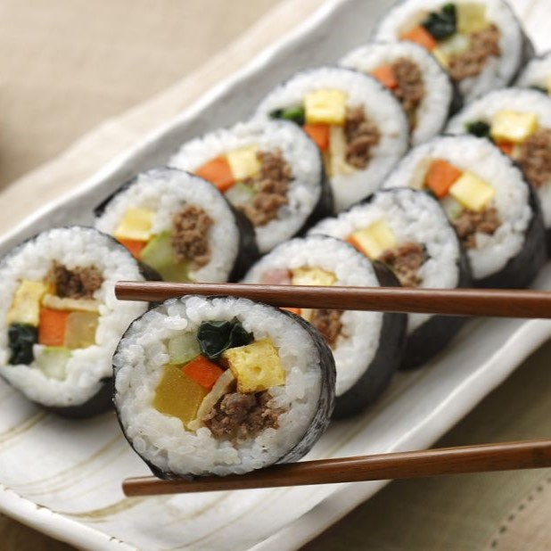

Kimbap recipe

Ingredients:
- 4 cups cooked rice
- 5 sheets of gim (dried seaweed)
- 2 tbsp sesame oil
- 1 tbsp sugar
- 1/2 tsp salt
- 150g pickled radish (danmuji), cut into strips
- 100g carrots, cut into strips and stir-fried
- 100g spinach, blanched and seasoned with sesame oil and salt
- 100g cucumber, cut into strips
- 100g ham, cut into strips
- 4 eggs, beaten and cooked into thin omelets
Instructions:
- Prepare the rice by mixing sesame oil, sugar, and salt into the cooked rice to make seasoned
rice.
- Place a sheet of gim on a bamboo sushi mat with the shiny side down.
- Spread a thin layer of seasoned rice evenly over the seaweed, leaving a small gap at the top.
- Arrange the fillings (pickled radish, carrots, spinach, cucumber, ham, and egg strips) in a line along the
bottom edge of the rice.
- Roll up the seaweed tightly using the bamboo mat, pressing gently as you roll to shape the kimbap.
- Once rolled, slice the kimbap into bite-sized pieces using a sharp knife.
- Serve as-is and enjoy!